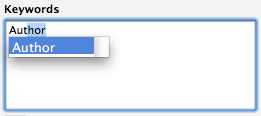
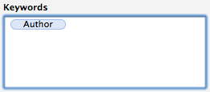
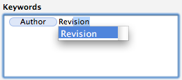
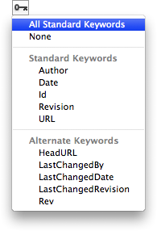
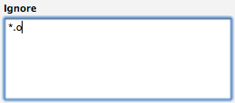
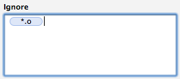
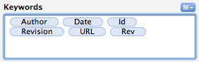

Use the inspector's Properties tab to edit the selected items' Subversion properties. You can edit the properties of multiple files or folders when multiple items are selected in the browser.
The fields displayed are dependent on the type of item selected:
svn:keywordsThe keyword names are displayed as tokens similar to E-mail address in Apple Mail.
To add a keyword:
Click in the field to activate it and start typing the name of the keyword. An auto-complete list will be displayed. To accept the suggestion press the Return (⏎) key or type to the end of the word and press the Space key.

Once accepted, the keyword is displayed as a blue button:

Continue typing to enter the next keyword:

To delete a keyword, either select the keyword button with the mouse or place the insertion point to the right of the button and press the Delete (⌫) key.
You can also use the keyword menu located underneath the field to select from the list of available keywords:

The selected keyword(s) will be inserted at the current cursor location.
svn:eol-styleSelect how line breaks are processed when transmitting the file to or from the repository.
If you are sharing the file with team members working on Windows then you should consider setting this property to Convert to System (i.e. Native).
If all team members are working on a Mac (or other Unix-like operating systems such as Linux, FreeBSD or OpenBSD) then you can leave this property set to the default value of Do Nothing.
svn:mime-typeSelect the file's MIME type from the popup list. If file's MIME type is not available in the list then type the value into the field.
svn:executableSet this field to Yes for scripts which should be marked executable in the file system whenever the file is checked out or updated.
Subversion will automatically set this property to Yes for executable files when they are added to the working copy.
svn:needs-lockSet this field to Yes if the file should be marked as read-only in the file system until locked.
See the Locking entry in the terminology section for more information.
svn:ignoreThe ignore patterns are displayed as tokens similar to E-mail address in Apple Mail.
To add a pattern:
Click in the field to activate it and start typing the pattern. You may include wildcard characters such as * and ?. To accept the suggestion press the Return (⏎) key.

Once accepted, the pattern is displayed as a blue button:

Note that ignore patterns are case-sensitive.
To delete a pattern, either select the pattern button with the mouse or place the insertion point to the right of the button and press the Delete (⌫) key.
Individual items can be ignored using the Ignore function on the items' right-click menu.
It is only possible to ignore unversioned files, i.e. files which are under version control (including those scheduled to be added) can no longer be ignored.
To ignore a file scheduled to be added:
Wildcard patterns are not inherited by a folder's sub-folders. If you want to ignore items across an entire folder hierarchy then you will have to:
Add the ignore pattern to each sub-folder
or:
You can do this in the application's preferences or by editing your Subversion configuration (see Help > Subversion Documentation for information on how to do this.)
svn:externalsThe externals table displays the entries from the folder's svn:externals properties.
Click the Open Externals button to open an editor for the folder's externals or select Open Externals... from the File menu (key equivalent ⇧⌘X).
A property which has been changed since the last update or commit is described as modified and is indicated with a button:

To revert a modified property to a pristine copy of it's BASE revision:
Click the property's pop-up button to display a menu.
Select the Revert to Last Update command.
The property's modified value is replaced with the property's BASE value.
Click Save Changes.
Cornerstone's Inspector can be extended to show additional fields for user properties. See the User Properties section for more information.